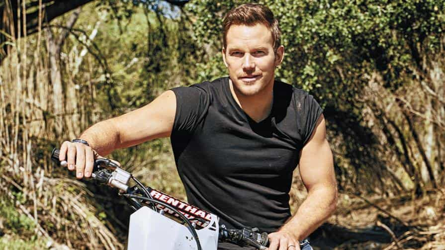
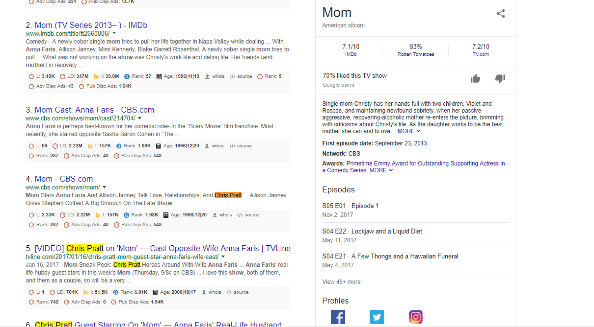

Kyle is an entrepreneur and nomad who has been living abroad since 2016. He blogs at This Is Trouble. Follow him on Facebook.


A divorce between a Hollywood A-list couple always brings people to tears. I’ve never understood why this is. Every time a “power couple” breaks up, people take to Twitter and write sob messages about how sad they are, and if “They can’t make it, love doesn’t exist!”
Except, in the case of the split between Chris Pratt and Anna Faris, the tears had some merit. Because a very popular A-list actor directly confirmed what we’ve been saying for years now: men prefer younger and more beautiful women—every time.
Hollywood is always an interesting dynamic in displaying how the sexual marketplace really works, simply because there can be such drastic changes in value in a short amount of time. A C-list actor may be happy to take on an aging A-list actress because of the status and connections in Hollywood she gives him access to, but if that actor makes it big, he’ll be looking to jump off the ship ASAP.
On the flip side, you actually don’t see a ton of the younger women/older man dynamics—likely because of the backlash the older actor would receive. Even one of the most famous bachelors of Hollywood, George Clooney, ended up marrying a woman who was 35 when they wed (albeit still over a decade his junior).
Not too long ago, Chris Pratt looked like this:
His new look?

With his physical transformation over the years, combined with his increasing star power, Chris Pratt is a smart man for getting off the sinking ship that his soon-to-be ex wife, Anna Faris. From what I gather, they’ve been married for about ten years. Prior to the marriage, both had success in Hollywood—but Chris has now exploded.
He’s getting out of the marriage before he gets even bigger movie roles, bigger star power, and therefore—even bigger paydays (that she would likely be entitled to, as it’s relatively suspected they don’t have a pre-nup). At the same time, he’s now got his choice of pretty much any younger and hotter girls in the world instead of this:
Now, I’ll say this—she doesn’t look bad for 40. You’ve probably seen better, but you’ve also probably seen a hell of a lot worse. She’s preferably to many of the women like this. But, then you go and compare her to Jennifer Lawrence (it’s been rumored Pratt is now with), and it’s no contest. Even if Lawrence is batshit crazy.
The media, and Chris himself, will likely make up some crap about how they had drifted apart, but that they needed to grow individually, and how it’s not anybody’s fault because they still love each other and always will.
Everybody reading this website knows that’s a load of crap. Pratt is now entering the prime of his life (38)—one could argue that 35-40 is a man’s prime in general, provided he has his life together. This is even more true for an A-list Hollywood actor. He has a superhero contract with one of the largest movie franchises to ever hit the screen as Peter Quill in the Marvel Universe.
Then he moonlights with another mammoth contract where he’s taming dinosaurs in the Jurassic franchise. Throw in a few other larger contracts, and you can see that he’s not going anywhere. Meanwhile, Faris works on some show called Mom (apparently on CBS). If you Google “anna faris mom”, Chris Pratt’s name shows up in results 5-10 for his one guest appearance.

Those who are unplugged know the truths: men value youth and beauty, and women value power. Youth and beauty is relatively self-explanatory. Power is a bit trickier to define though. It’s the reason that so many females can’t ever describe what their real “type” is. That’s because power manifests in many shapes and forms—by social proof (other females wanting a man), money, physique, and other elements that are beyond the scope of this article.
It’s rare that men will sacrifice our prime desires (youth and beauty) in order to enhance our career or status. And when they first wed, it made sense.
Pratt had far less money, no physique, and way less social proof (women thought he was an adorable teddy bear instead of wet-panties-inspiring). You can look at older photos and say, “Yeah, that’s a couple that makes sense together.”
We’ll never know the truth about any of these divorces, but it’s not hard to see the writing on the wall. While maybe Hollywood couples do marry for the right reasons, it always seems to end messy. Despite what the media and all of Hollywood would like us to think, biology is still very much in control of us. Men are going to want younger and more beautiful women. As careers rise and more access is given, you can expect the marriages to fall apart.
I, for one, applaud Chris Pratt for getting out while he can. He’ll never admit it, and maybe it was mutual—but I’d bet money on the fact that he’s been feeling increasingly resentful towards his life choices over the past years as his star power has grown. It was a smart choice.
Check out my show, the Dating Abroad Podcast. Get my free 6-part video workshop on making money here.
Read More: The Expectations Of Modern Women Have Lost Touch With Reality And Common Decency